Pet parents struggle to find a suitable veterinarian for their pets and need a more efficient and accessible way to
find adequate and knowledgeable veterinarians.Our new veterinary search engine app has been created to help individuals
filter through a wide array of veterinarians to find the best fit for their pet(s). Our application also lets pet parents
see real reviews from real people. We have multiple review systems that do not lump each species into one category.
Our application also enables pet parents to review detailed pricing at each practice.
Problem Statement
Pet parents struggle to find a suitable veterinarian for their pets and need a more efficient and accessible
way to find adequate and knowledgeable veterinarians.
We conducted 4 Competitor Analysis
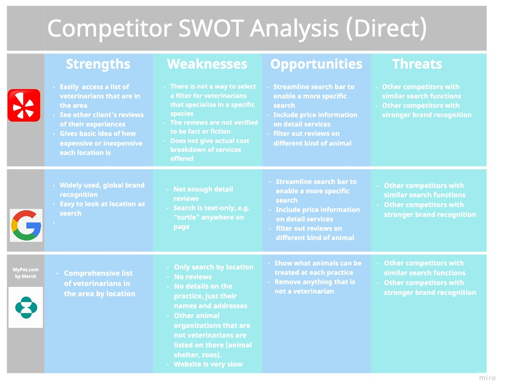
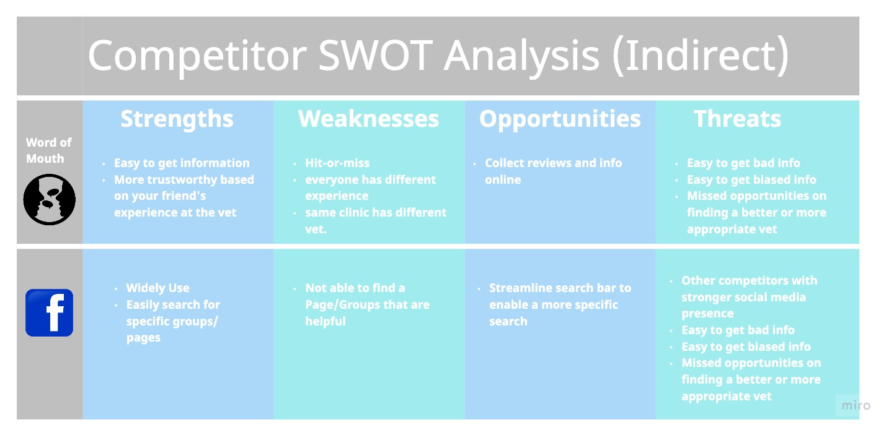
Our research plan is to create a google survey and share on our social platforms and aim to have 30-40
participants and conduct 5 one on one user interview about 10-20 minutes to pet owners.
Target User
- Male or Female
- Any Age above age of 18
- Owned or currently own pet
- Ideally who owned/currently own exotic pets
We completed 5 user interview and received 35 google survey responses.
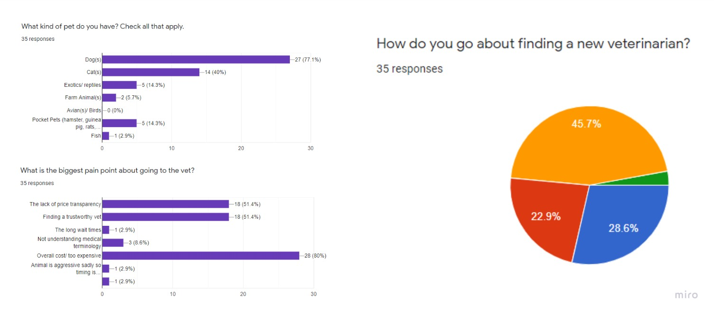
Our User Say....
“ I wish there is complete list of animals they treat instead of just "exotics".
Many exotic vets only deal with birds, not reptiles surprisingly.”
“Exotic vets are quite difficult to find. Especially ones who are
well versed in a wide array of exotics; especially reptiles.”
“Many ER vets don't deal with exotics and us breeders lost a lot of animals that way.”
After our research and interview process, we categoried our affniity diagram.
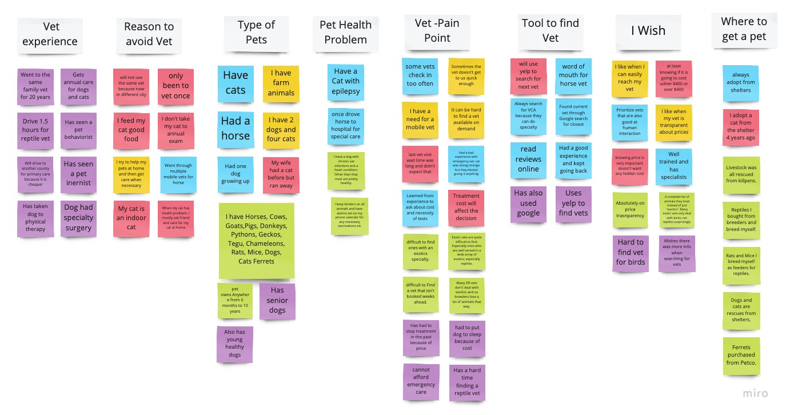
We developed our user persona after the completion of our user interview.
Sara is a 37 Female working as a Nurse Practitioner. She has 3 turtles, 1 tortoise,
and a Persian cat. She is having hard time finding vet for all of her pets. She worry
bout the unexpected cost and have difficulty finding emergency care for her turtle/tortoise.
She hope to establish an affordable primary care veterinarian for all 5 of her pets.
User Persona

This is our Story Board
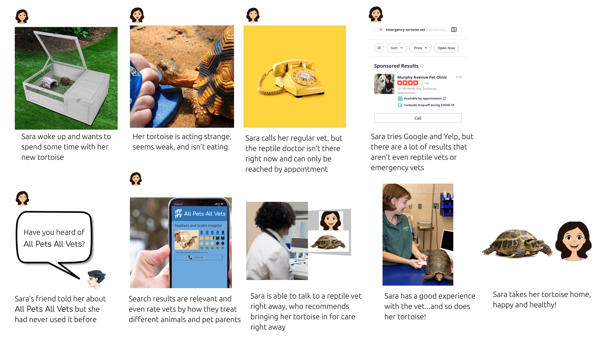
User Insight
How might we improve pet parents experience on finding a trustworthy veterinarian so that their pet can access necessary primary care, specialty veterinarian and emergency care when needed?
After we have a full understanding of the user's needs and pain point, we developed the user flow.
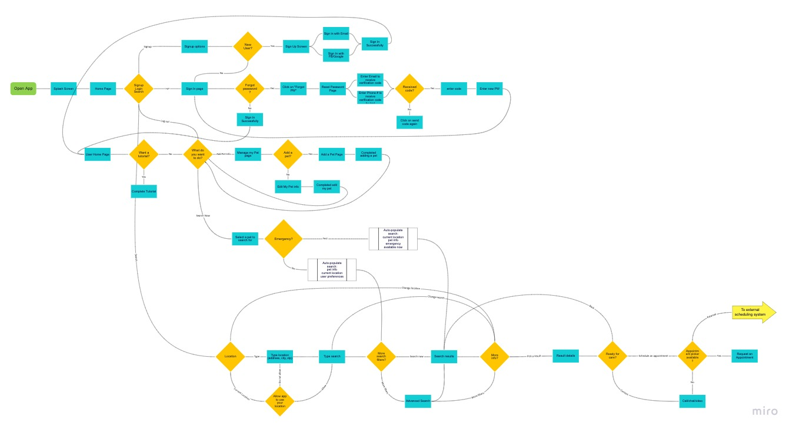
We began to sketch our first iteration. We combined our group sketches and finalized our first low-fi prototypes.
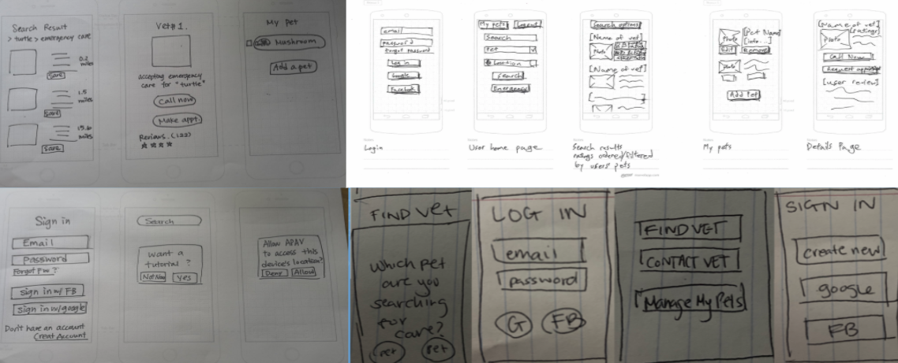
We completed 4 recorded usability testing via Zoom and we were able to identify and summarize the key findings.
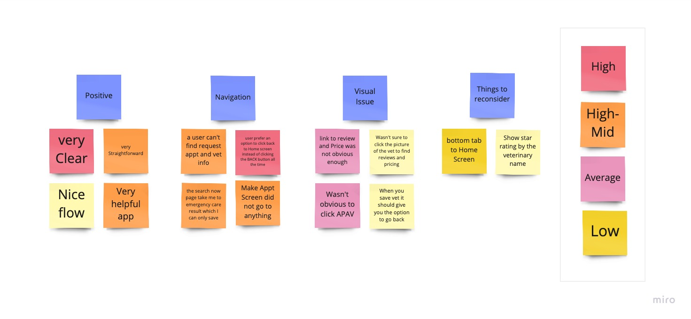
Next,we developed mid-fidelity prototypes.
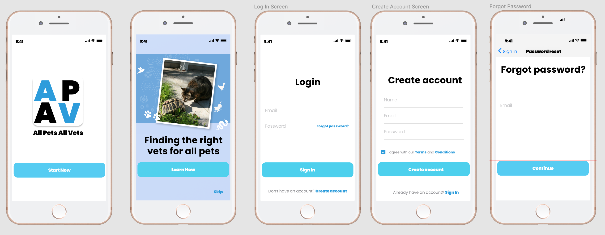
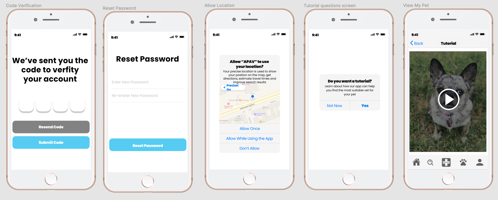
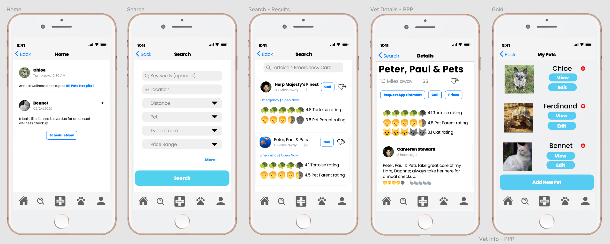